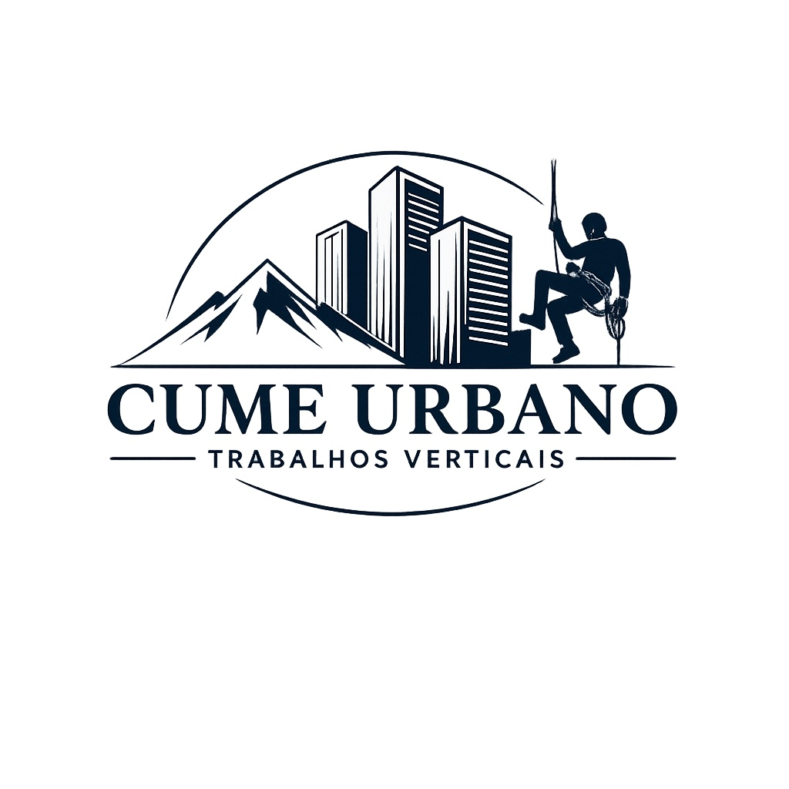
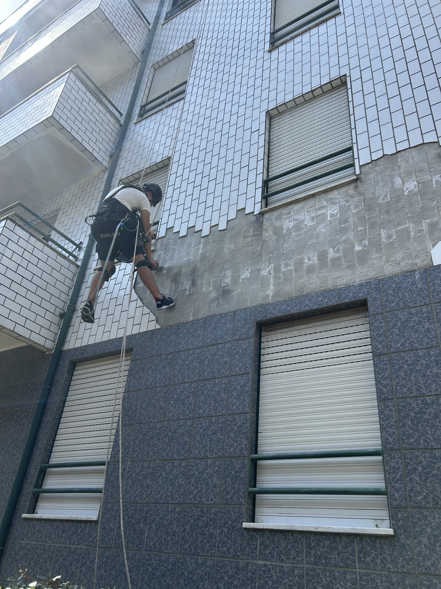
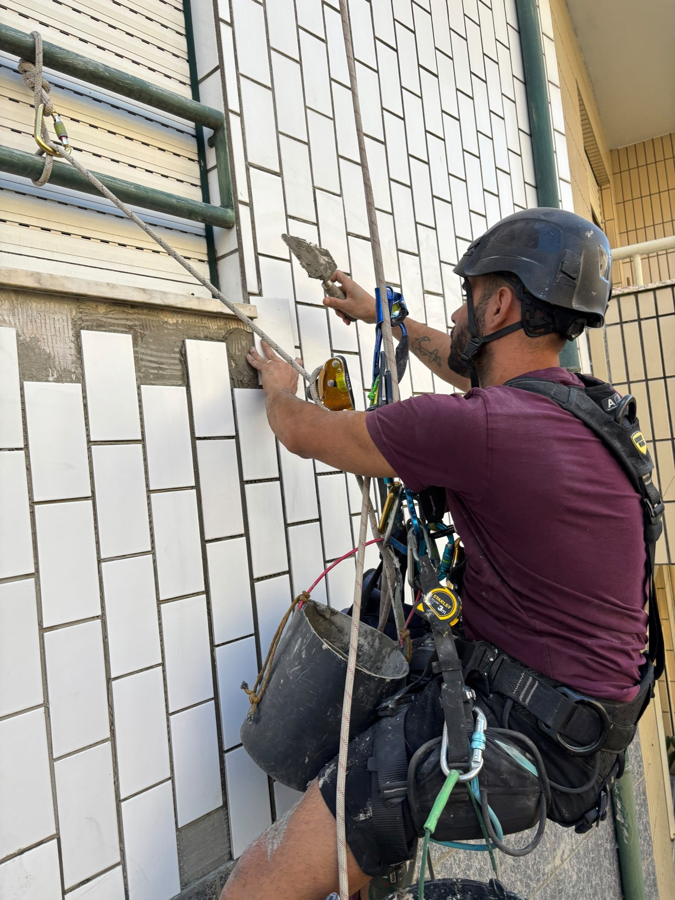
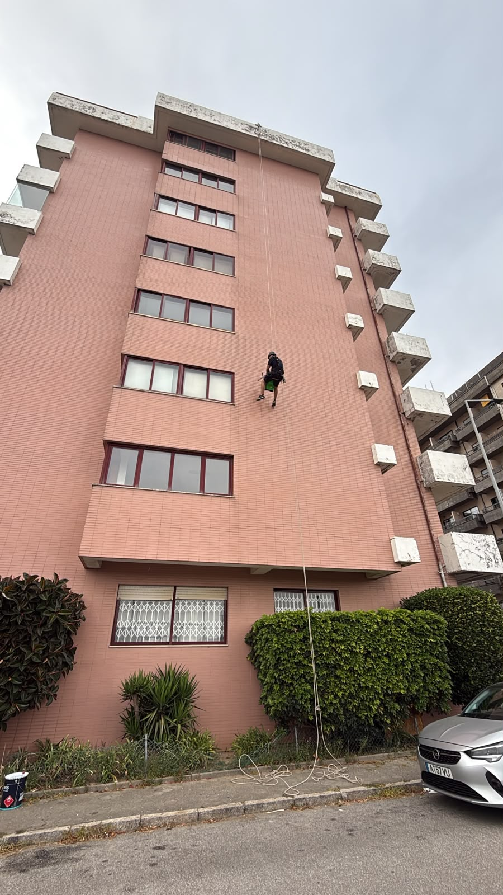
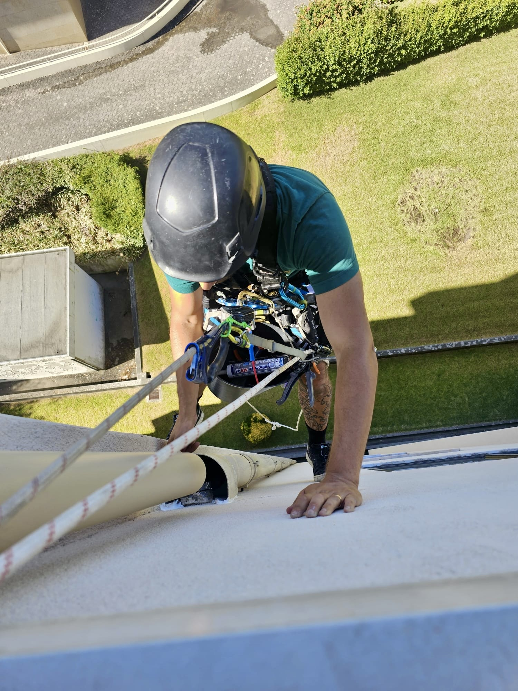
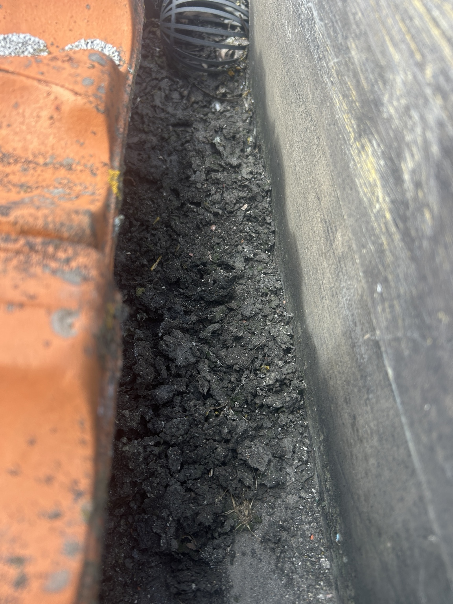
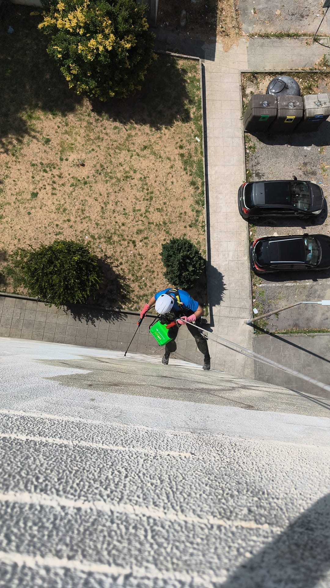
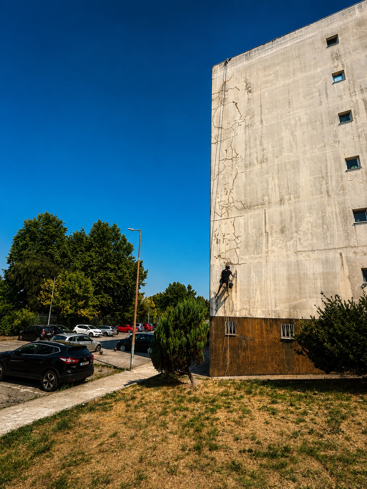
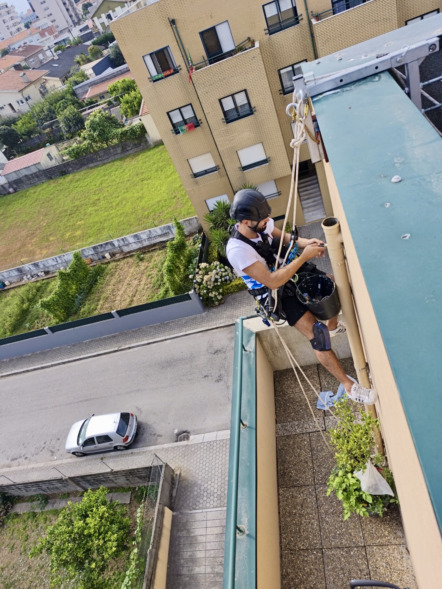

Onde o acesso
é difícil, nós chegamos.
Trabalhos em altura, reparação e manutenção de fachadas, impermeabilizações e inspecções técnicas — com soluções adaptadas a cada intervenção.

TRABALHOS VERTICAIS
Serviços para resolver
o que parece inacessível.
Da intervenção em altura à inspecção aérea, reunimos diferentes soluções para manutenção, reparação e avaliação de edifícios e estruturas.
Trabalhos Verticais
Acesso por cordas para executar trabalhos em fachadas e outras zonas onde o acesso convencional é condicionado.
PEDIR INFORMAÇÃO → 02Fachadas
Reparação e manutenção de fissuras, rebocos, revestimentos e elementos degradados.
PEDIR INFORMAÇÃO → 03Impermeabilização
Intervenção em zonas problemáticas para combater entradas de água e melhorar a protecção das superfícies.
PEDIR INFORMAÇÃO → 04Inspecção com Drone
Inspecção aérea de fachadas, coberturas, painéis solares e outras zonas de difícil acesso.
VER SERVIÇO → 05Limpeza e Manutenção
Intervenções de manutenção em fachadas, coberturas, caleiras e elementos exteriores.
PEDIR INFORMAÇÃO → 06Inspecção e Diagnóstico
Avaliação visual de zonas inacessíveis para perceber o estado e definir os próximos passos.
PEDIR INFORMAÇÃO →Trabalhos verticais. Soluções à altura.
A Cume Urbano dedica-se a trabalhos verticais e intervenções em altura. O nosso trabalho passa por chegar a zonas onde o acesso é condicionado e executar a intervenção necessária com planeamento, equipamento adequado e atenção à segurança.
Actuamos sobretudo em edifícios residenciais, condomínios, espaços comerciais e outras estruturas que necessitem de manutenção, reparação ou intervenção em altura.
Quando o acesso muda,
a solução também.
Nem todas as intervenções precisam da mesma abordagem. A escolha do método certo pode tornar o trabalho mais simples, rápido e adequado às condições do local.
Acesso
Chegamos a zonas onde o acesso convencional é condicionado.
Versatilidade
Trabalhos verticais e inspecção aérea para diferentes necessidades.
Precisão
Intervenções direccionadas para o problema identificado.
Planeamento
Cada trabalho é pensado de acordo com o local e as condições existentes.
Ver o que está fora do alcance.
O drone permite observar e registar zonas de difícil acesso sem começar logo por uma intervenção. É uma ferramenta útil para avaliar fachadas, coberturas, painéis solares e outros elementos em altura.
Com imagens aéreas detalhadas, conseguimos perceber melhor o estado do local, identificar anomalias e ajudar a definir a intervenção mais adequada.
Veja a Cume Urbano
em trabalho.
Vídeos reais das intervenções. Sem imagens de catálogo — o trabalho é este.
Trabalhos reais.
Sem filtros de catálogo.
Uma selecção de intervenções e situações reais em que a Cume Urbano trabalhou.








Um problema no edifício não tem de se transformar numa obra maior.
Fissuras, infiltrações, elementos degradados ou zonas de difícil acesso podem exigir uma intervenção específica. A Cume Urbano avalia o trabalho e procura definir uma solução adequada ao local.
Grande Porto e Aveiro, com base em Gaia.
A Cume Urbano está sediada em Vila Nova de Gaia e realiza deslocações pelo Grande Porto e pela região de Aveiro, normalmente num raio aproximado de 50 a 60 km em torno de Gaia.
A origem do problema
nem sempre está onde a água aparece.
Uma infiltração pode estar relacionada com fissuras, juntas, remates, revestimentos degradados ou outros pontos da envolvente do edifício. A avaliação da zona exterior ajuda a perceber onde intervir.
FALAR SOBRE UMA INFILTRAÇÃO →Simples no processo.
Rigorosos na execução.
O objectivo é perceber o problema, definir o trabalho e executá-lo com o método adequado.
Perceber o problema
Recolhemos informação sobre o local, o estado da zona e as condições de acesso.
Definir a intervenção
Escolhemos o método, equipamento e materiais adequados ao trabalho.
Fazer o trabalho
Realizamos a intervenção com foco na segurança, rigor e qualidade da execução.
Antes de avançar,
esclarecemos.
As dúvidas mais comuns antes de contratar uma intervenção por acesso por cordas.
É sempre necessário montar andaimes?
Não. Quando as condições do local o permitem, o acesso por cordas pode evitar estruturas auxiliares e facilitar a intervenção em zonas de difícil acesso.
Fazem trabalhos em condomínios?
Sim. As intervenções podem ser realizadas em edifícios residenciais, comerciais e outras instalações, de acordo com as condições do local.
Podem avaliar uma infiltração?
Podemos analisar a zona afectada e os elementos exteriores relacionados com a entrada de água, ajudando a definir a intervenção adequada.
Como posso pedir um orçamento?
Envia uma descrição do problema e, se possível, fotografias ou vídeos. Essa informação ajuda-nos a perceber melhor o trabalho.
Trabalham fora de Gaia?
Sim. A área principal inclui o Grande Porto e a região de Aveiro, normalmente num raio aproximado de 50 a 60 km de Vila Nova de Gaia.
Posso enviar fotografias antes da visita?
Sim. Fotografias e vídeos podem ajudar na análise inicial e na preparação da proposta.
Explique-nos o problema.
Nós tratamos do acesso.
Envie a descrição do trabalho, fotografias ou vídeos do local.
Vamos falar sobre
a intervenção.
Telefone: 934418231 / 913128445
Email: cumeurbano@gmail.com
WhatsApp: 934418231 / 913128445